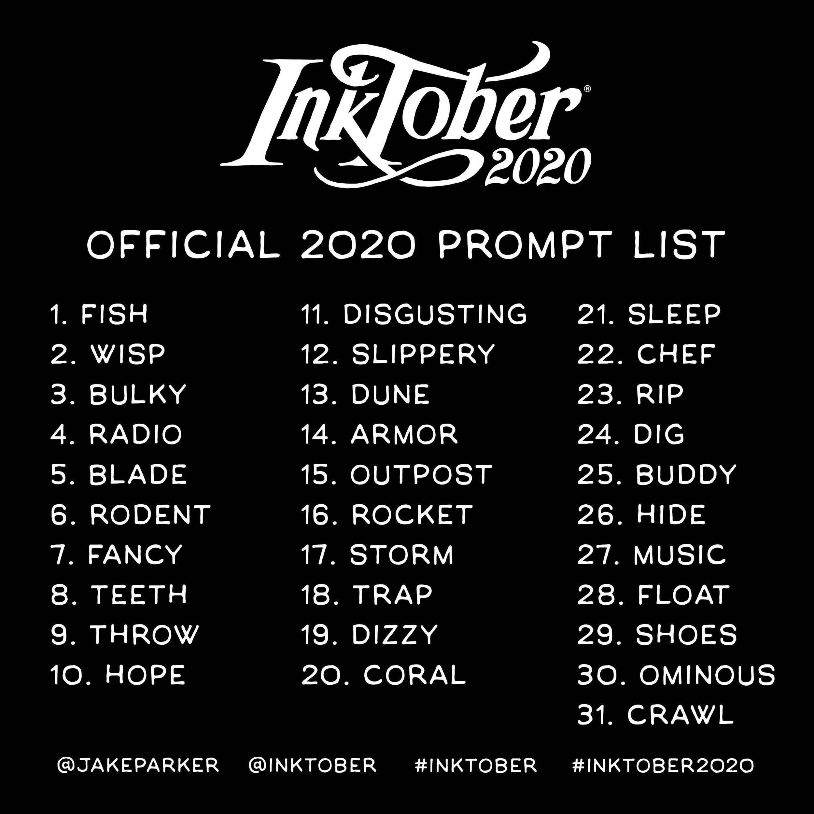

I like to code and make small little projects that I never really show anybody. The langauges that I know are HTML / CSS / Javascript, Python, GDscript, and C#. The language that I am the most familar with is Python being the first language that I learned. The second language, or languages that I learn was HTML / CSS / Javascript, I put these all in bundle because HTML and CSS aren't really coding languages. I learned a little of C#, just for Unity development, but I haven't been using it latly because my computer can't really run Unity well. This leds me to the last most recent coding language I learned and still learning GDscript which is with the Godot game engine.

I really enjoy running and am participating in the Cross Country and Track Teams at Grantsville High School. Right now I am at the top of the boys varsity team for Cross Country and don't plan on being taken down. I didn't really get to run in Track in 2020, but I hope that they don't cancel the next season in 2021. Really the main reason why I run is because I'm not that good at any other sports, and not very corrdinated. I think I will be running in collage and if not then I will surely be there to run half to full marathons, or shorter road races.

The last thing on this list is that I really like to draw and or create art. I have been drawing as a hobby sence I was in middle school, there have been dry period where I don't draw as often, but I has been farly consistent. I mostly create art with pencil and paper, I never like to add color, but sometimes it's neccessary to make something look cooler. The only time I'm not drawing I'm painting using watercolors, I love the look of water colors and it is easier to paint with than acrilic. There is this drawing event each year since 2016 called Inktober, this event is the everyday of October you make a drawing that is related to the propt and use any ink draw device in order to create it. I perticapated as much as I this year and go a good amount of drawings out.
